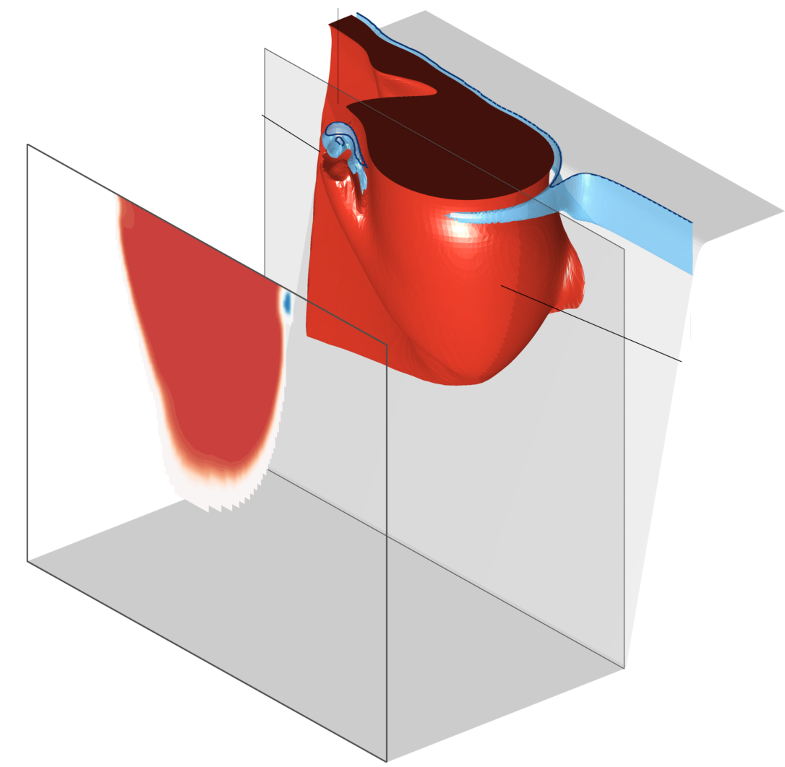

Deepak Cherian
physical oceanographer
Research Associate (Post-doc), Oregon State University
dcherian@ceoas.oregonstate.edu
Current Research
Mixing measurements in the Bay of Bengal
With Emily Shroyer (OSU)
We are studying measurements of mixing from χ-pod sensors deployed in the Bay of Bengal as part of the Air-Sea Interaction Regional Initiative (ASIRI).
Inertial-gravity waves in the equatorial Pacific
With Tom Farrar (WHOI) & Ted Durland (OSU).
Satellite observations give humanity an unprecedented detailed look at the surface ocean. The vertical structure of variability associated with surface signals is relatively less known, and the relevance of theoretical structures derived using strict assumptions is debated; viz., the so-called baroclinic vertical modes.
Motivated by [zonal wavenumber]-frequency spectra of Farrar & Durland (2012), I am attempting to infer the vertical structure of 7-day period inertial-gravity waves in the equatorial Pacific.
Shelf-water export by mesoscale eddies
Advisor: Ken Brink (WHOI) | Read the paper! | Video!

My dissertation looked at the interaction of deep-ocean mesoscale eddies with continental shelf-slope topography.
When visualized using passive tracer fields (red tracks eddy water and blue, shelf-slope water), the interaction clearly results in the formation of smaller-scale secondary vortices. We term these 'stacked' vortices to reflect their (unexpected) vertical structure wherein shelf-slope water is stacked over eddy water.
Publications
2016
- Cherian D.A., Brink K.H. 2016. Offshore Transport of Shelf Water by Deep-Ocean Eddies. Journal of Physical Oceanography. 46 3599–3621
2013
- Haine T.W.N., Cherian D.A. 2013. Analogies of Ocean/Atmosphere Rotating Fluid Dynamics with Gyroscopes: Teaching Opportunities. Bull. Amer. Meteor. Soc.. 94:684.
- Brink K.H., Cherian D.A. 2013. Instability of an idealized tidal mixing front: Symmetric instabilities and frictional effects. Journal of Marine Research. 71(6):26.
Contact
Office Address: Burt 434, OSU, Corvallis SSR, OR
Acknowledgments
My work has been funded by the US National Science Foundation and the Office of Naval Research.
Styling gratefully borrowed from Ethan Schoonover, Nicolas P. Rougier and Matthew Butterick.
Website built using Emacs Org-mode